反馈对共振影响
1. 力矩反馈
力矩反馈只会影响双惯量模型的分母。而实际振动频率是反共振点，反共振点最主要是由分子决定的，但也会受附近极点影响，力矩反馈对反共振点的抑制主要是利用这个原理。
1.1 二次项
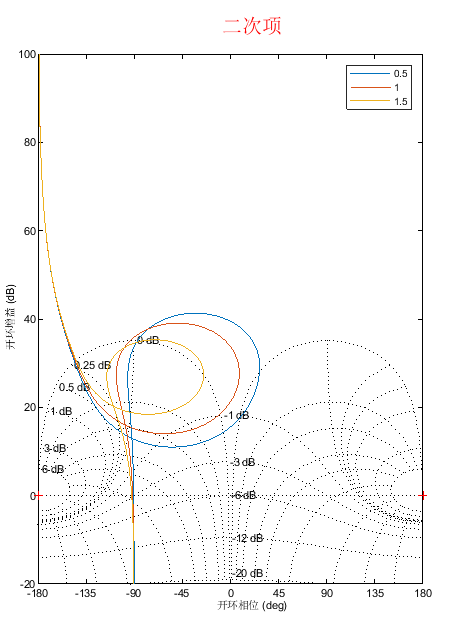
增大二次项系数，反共振幅值变小，共振幅值变大。
1.2 一次项
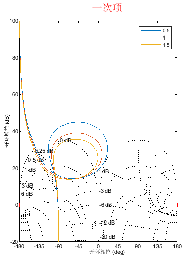
增大一次项系数，反共振幅值变大，共振幅值变小。
1.3 零次项
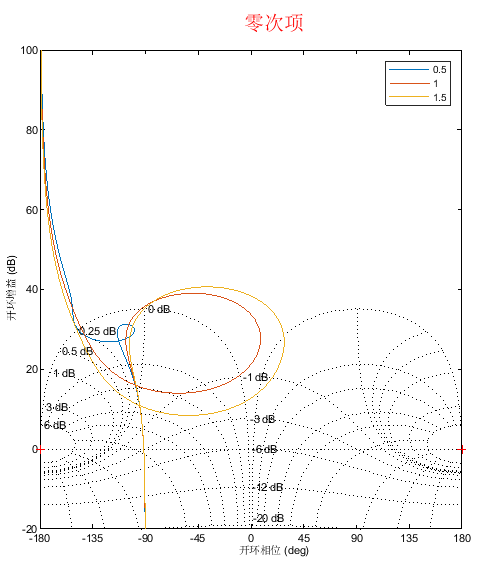
增大零次项系数，反共振幅值变大，共振幅值变小。
1.4 负一次项系数
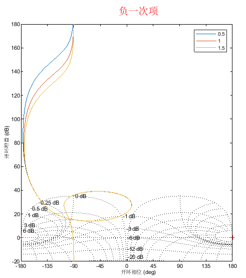
增大负一次项系数，反共振幅值几乎不变，共振幅值几乎不变。
1.5 三次项系数
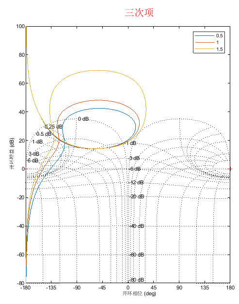
增大三次项系数，反共振幅值几乎不变，对共振幅值影响极大。
1.6 总结
| 系数增大对反共振点幅值影响 | 系数增大对共振点幅值影响 | 备注 | |
|---|---|---|---|
| 三次项 | 0 | 3 | 作用于高频，对共振点和速度带宽附近影响大 |
| 二次项 | -1 | 2 | 增大会抑制反共振幅值 |
| 一次项 | 1 | -1 | 几乎同等影响共振和反共振点 |
| 零次项 | 2 | -1 | 对反共振点影响较大 |
| 负一次项 | 0 | 0 | 作用于超低频几乎无影响 |
2. 常见反馈类型
只看转矩反馈
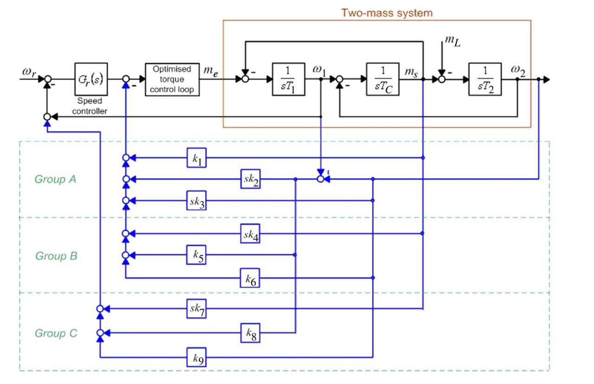
原始双惯量模型

k1. 负载转矩反馈（ 一次，零次）

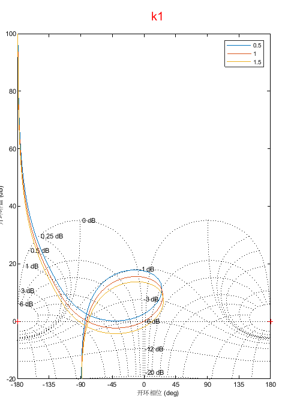
- k2（二次项）

- k3（ 一次，零次）
增大电机等效惯量
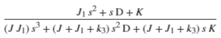
- k4（ 二次项，一次项）
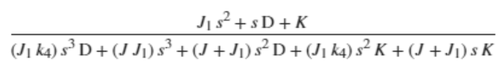
- k5（ 一次项）
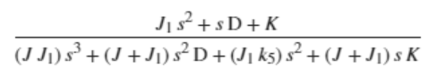
- k6（ 零次项，负一次项）
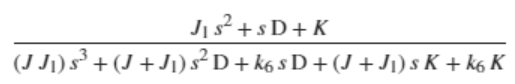